🎧 Auriculares Inicial / Calidad-Precio
K240 Studio (AKG)
~US$50
El clásico semiableito y barato. Ligero, cómodo y todavía el primer par de estudio por defecto.
Semiabierto · 55 Ω · cable de 3 m
Ver precio en Amazon ↗
🎧 Auriculares Inicial / Calidad-Precio
MDR-7506 (Sony)
~US$98
El estándar de radio y postproducción desde hace treinta años. Se pliega, suena honesto y aguanta la mochila.
Cerrado · 63 Ω · cable de 3 m · adaptador 6,3 mm
Ver precio en Amazon ↗
🎧 Auriculares Inicial / Calidad-Precio
ATH-M40x (Audio-Technica)
~US$109
La serie M más plana y más barata: menos realce de graves que el M50x, así que es más fácil fiarse de la primera mezcla.
Cerrado · 35 Ω · cable desmontable
Ver precio en Amazon ↗
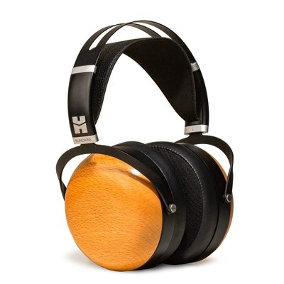
🎧 Auriculares Inicial / Calidad-Precio
Sundara Closed-Back (HiFiMAN)
~US$129
El Sundara cerrado: velocidad planar para grabar cuando un abierto suena demasiado fuerte.
Cerrado · planar · 20 Ω · desmontable
Ver precio en Amazon ↗
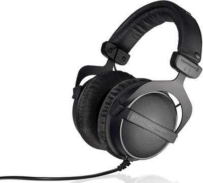
🎧 Auriculares Inicial / Calidad-Precio
DT 770 PRO (80 Ω) (beyerdynamic)
~US$140
Almohadillas de velur y copa cerrada para que el clic no se cuele en la toma. La versión de 80 Ω funciona con cualquier interfaz.
Cerrado · 80 Ω · velur · cable de 3 m
Ver precio en Amazon ↗
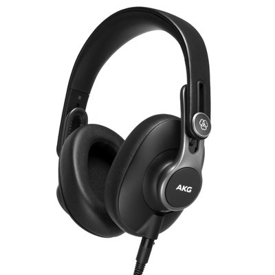
🎧 Auriculares Inicial / Calidad-Precio
K371 (AKG)
~US$146
Cerrado, plegable y afinado Harman: una referencia fiable y fácil de mover fuera del estudio.
Cerrado · 32 Ω · desmontable · plegable
Ver precio en Amazon ↗
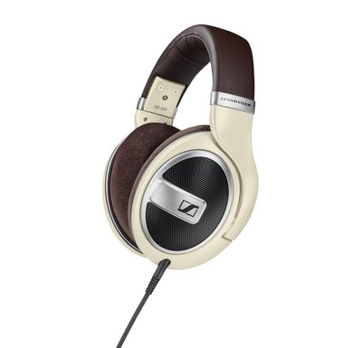
🎧 Auriculares Inicial / Calidad-Precio
HD 599 (Sennheiser)
~US$150
Abierto cálido y cómodo para escuchar y arreglar durante horas.
Abierto · 50 Ω · cable desmontable
Ver precio en Amazon ↗
🎧 Auriculares Inicial / Calidad-Precio
ATH-M50x (Audio-Technica)
~US$159
El cerrado que sale en todas las fotos de estudio. Fácil de mover, tres cables en la caja y sirve para grabar y comprobar mezclas.
Cerrado · 38 Ω · 3 cables · copas giratorias
Ver precio en Amazon ↗
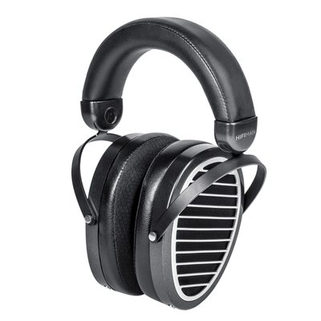
🎧 Auriculares Inicial / Calidad-Precio
Edition XS (HiFiMAN)
~US$167
Una escena planar grande y con extensión real por el precio; pide un amplificador de verdad.
Abierto · planar · 18 Ω · desmontable
Ver precio en Amazon ↗
🎧 Auriculares Inicial / Calidad-Precio
SRH840A (Shure)
~US$169
El monitor cerrado de Shure, con unos medios adelantados que dejan claro el equilibrio de la voz.
Cerrado · 40 Ω · cable desmontable
Ver precio en Amazon ↗
🎧 Auriculares Inicial / Calidad-Precio
Sundara (HiFiMAN)
~US$179
Detalle planar a precio de dinámico. Rápido, abierto y sincero con las mezclas malas.
Abierto · planar · 37 Ω · desmontable
Ver precio en Amazon ↗
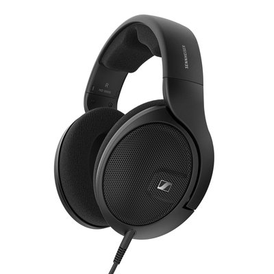
🎧 Auriculares Inicial / Calidad-Precio
HD 560S (Sennheiser)
~US$180
Neutro y amplio, y lo bastante barato para tenerlo como segunda referencia junto a un cerrado.
Abierto · 120 Ω · 3,5 mm + adaptador
Ver precio en Amazon ↗
🎧 Auriculares Inicial / Calidad-Precio
MDR-M1 (Sony)
~US$198
El monitor cerrado moderno de Sony: plano para decidir y cómodo para diez horas seguidas.
Cerrado · 50 Ω · cable desmontable
Ver precio en Amazon ↗
🎧 Auriculares Inicial / Calidad-Precio
ATH-M50xBT2 (Audio-Technica)
~US$215
El ajuste del M50x con Bluetooth y micrófono: el mismo par para el trayecto y para el escritorio.
Cerrado · Bluetooth 5.0 · 3,5 mm · USB-C
Ver precio en Amazon ↗
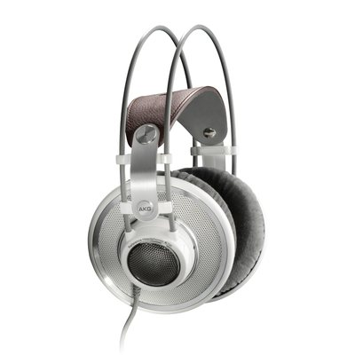
🎧 Auriculares Inicial / Calidad-Precio
K701 (AKG)
~US$245
La referencia abierta, amplia y brillante de AKG que popularizó mezclar con auriculares abiertos.
Abierto · 62 Ω · cable de 3 m
Ver precio en Amazon ↗
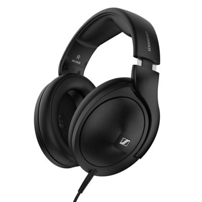
🎧 Auriculares Inicial / Calidad-Precio
HD 620S (Sennheiser)
~US$250
Ajuste de la familia 600 en versión cerrada, para salas donde un abierto se cuela en el micro.
Cerrado · 150 Ω · cable desmontable
Ver precio en Amazon ↗
🎧 Auriculares Inicial / Calidad-Precio
HD 600 (Sennheiser)
~US$260
La referencia abierta con la que todavía se traducen las mezclas. Necesita un amplificador decente y lo agradece.
Abierto · 300 Ω · cable desmontable
Ver precio en Amazon ↗
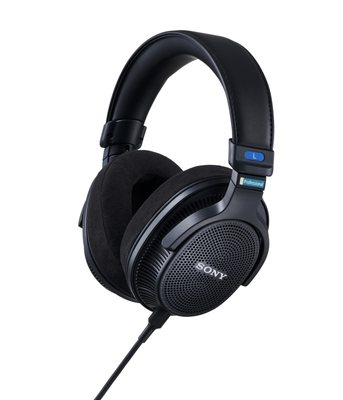
🎧 Auriculares Inicial / Calidad-Precio
MDR-MV1 (Sony)
~US$328
Referencia espacial abierta para Atmos y trabajo inmersivo, y sigue sirviendo para comprobar mezclas.
Abierto · 24 Ω · cable desmontable · 5 Hz–80 kHz
Ver precio en Amazon ↗
🎧 Auriculares Inicial / Calidad-Precio
ATH-M70x (Audio-Technica)
~US$305
El extremo de referencia de la serie M. Más detalle y un armazón más firme para jornadas largas de edición.
Cerrado · 35 Ω · 3 cables · estuche rígido
Ver precio en Amazon ↗
🎧 Auriculares Inicial / Calidad-Precio
HD 650 (Sennheiser)
~US$350
Un HD 600 más oscuro y cálido. Cómodo durante horas y con unos medios que favorecen la voz.
Abierto · 300 Ω · cable desmontable
Ver precio en Amazon ↗
🎧 Auriculares Inicial / Calidad-Precio
ATH-R70x (Audio-Technica)
~US$379
La referencia abierta de 199 g de Audio-Technica. Tan ligera que se olvida y tan plana que se confía.
Abierto · 470 Ω · cable desmontable
Ver precio en Amazon ↗
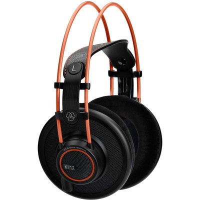
🎧 Auriculares Inicial / Calidad-Precio
K712 PRO (AKG)
~US$381
El K701 con más graves y cable desmontable: más amable con las mezclas actuales.
Abierto · 62 Ω · cable desmontable
Ver precio en Amazon ↗
🎧 Auriculares Inicial / Calidad-Precio
HD 490 PRO (Sennheiser)
~US$350
El abierto profesional de Sennheiser: ligero, reparable y con dos juegos de almohadillas para mezclar o editar.
Abierto · 130 Ω · 2 juegos · desmontable
Ver precio en Amazon ↗
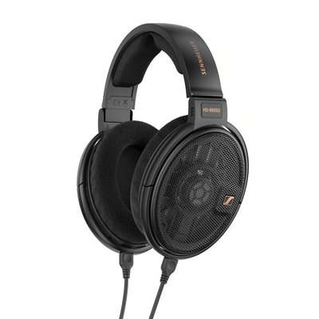
🎧 Auriculares Inicial / Calidad-Precio
HD 660S2 (Sennheiser)
~US$428
La familia HD 600 con graves profundos de verdad y más aire arriba. Un final feliz para mezclar.
Abierto · 300 Ω · cable desmontable
Ver precio en Amazon ↗
🎧 Auriculares Inicial / Calidad-Precio
NDH 20 (Neumann)
~US$551
El cerrado de estudio de Neumann: copas metálicas, graves honestos y hecho para grabar.
Cerrado · 150 Ω · cable desmontable
Ver precio en Amazon ↗
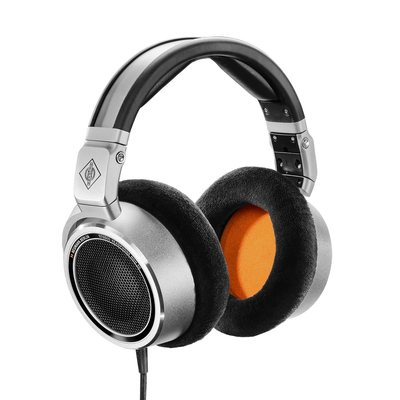
🎧 Auriculares Inicial / Calidad-Precio
NDH 30 (Neumann)
~US$699
El NDH abierto: una herramienta real de mezcla con medios planos y secos.
Abierto · 120 Ω · cable desmontable
Ver precio en Amazon ↗
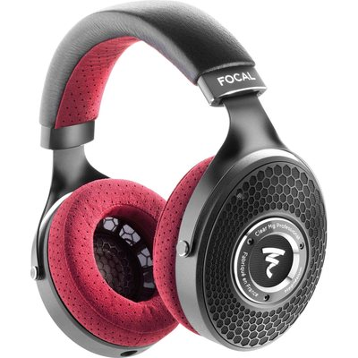
🎧 Auriculares Estudio Pro
Clear MG (Focal)
~US$1,202
La afinación insignia de Focal con cúpula de magnesio: contundente, amplia y sin piedad.
Abierto · 55 Ω · 2 cables · estuche
Ver precio en Amazon ↗
🎧 Auriculares Estudio Pro
HD 800 S (Sennheiser)
~US$1,500
Espacio y detalle de referencia para comprobar másters. Mejor con un amplificador dedicado.
Abierto · 300 Ω · cable balanceado incluido
Ver precio en Amazon ↗
🎧 Inalámbricos Inicial / Calidad-Precio
P30i (Soundcore)
~US$26
El par más barato que vale la pena llevar: ANC, varilla y un estuche de bolsillo.
TWS · ANC · 10 h + estuche
Ver precio en Amazon ↗
🎧 Inalámbricos Inicial / Calidad-Precio
Space Travel 2 (Moondrop)
~US$25
El par con ANC barato de Moondrop: afinación seria a precio de usar y tirar.
TWS · ANC · 6 h + estuche
Ver precio en Amazon ↗
🎧 Inalámbricos Inicial / Calidad-Precio
Vibe Beam (JBL)
~US$30
El par barato de JBL para todos los días: contundente, IP54 y mucha batería.
TWS · IP54 · 8 h + estuche
Ver precio en Amazon ↗
🎧 Inalámbricos Inicial / Calidad-Precio
Space Travel 2 Ultra (Moondrop)
~US$34
El Ultra añade LDAC y un transductor de 13 mm: la opción audiófila de presupuesto.
TWS · ANC · LDAC · 8 h
Ver precio en Amazon ↗
🎧 Inalámbricos Inicial / Calidad-Precio
C50i (Soundcore)
~US$35
Clip abierto para llamadas y escucha de fondo; nada dentro del oído.
Clip abierto · 8 h + estuche
Ver precio en Amazon ↗
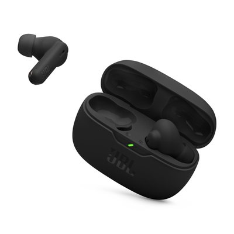
🎧 Inalámbricos Inicial / Calidad-Precio
Vibe Beam 2 (JBL)
~US$40
El Vibe Beam 2 añade ANC al mismo precio de entrada.
TWS · ANC · 8 h + estuche
Ver precio en Amazon ↗
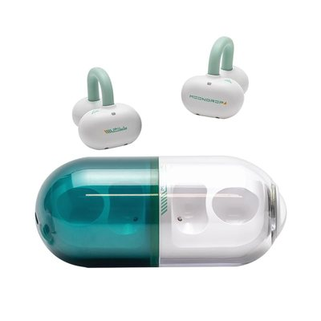
🎧 Inalámbricos Inicial / Calidad-Precio
Pill (Moondrop)
~US$42
El clip abierto de Moondrop con una afinación sorprendentemente neutra.
Abierto · 8 h + estuche
Ver precio en Amazon ↗
🎧 Inalámbricos Inicial / Calidad-Precio
WF-C510 (Sony)
~US$44
El Sony económico: ligero, cómodo, sin ANC pero con una afinación limpia por el precio.
TWS · IPX4 · 8 h + estuche
Ver precio en Amazon ↗
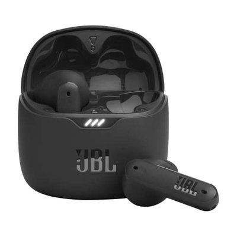
🎧 Inalámbricos Inicial / Calidad-Precio
Tune Flex (JBL)
~US$40
JBL abierto con almohadilla desmontable para no perder el entorno.
TWS · ANC · 8 h + estuche
Ver precio en Amazon ↗
🎧 Inalámbricos Inicial / Calidad-Precio
Tune Buds (JBL)
~US$45
El par con ANC de gama media de JBL y 48 horas de batería total.
TWS · ANC · 12 h + estuche
Ver precio en Amazon ↗
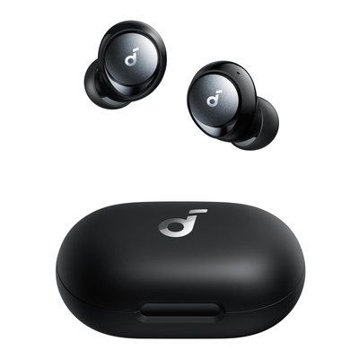
🎧 Inalámbricos Inicial / Calidad-Precio
Space A40 (Soundcore)
~US$52
Cápsulas pequeñas, mucha autonomía y ANC adaptativo por el precio.
TWS · ANC · 10 h + estuche
Ver precio en Amazon ↗
🎧 Inalámbricos Inicial / Calidad-Precio
Ear (a) (Nothing)
~US$55
El par barato de Nothing: 45 dB de ANC, diseño transparente y afinación limpia.
TWS · ANC · 9,5 h
Ver precio en Amazon ↗
🎧 Inalámbricos Inicial / Calidad-Precio
ZE500 (final)
~US$60
Auriculares diminutos para dormir y ASMR con sonido binaural; aptos para dormir de lado.
TWS · cápsula mínima · 6 h
Ver precio en Amazon ↗
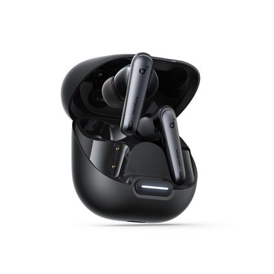
🎧 Inalámbricos Inicial / Calidad-Precio
Liberty 4 NC (Soundcore)
~US$70
La referencia calidad-precio en cancelación: un 98 % menos de ruido, LDAC y una batería enorme.
TWS · ANC · LDAC · 10 h
Ver precio en Amazon ↗
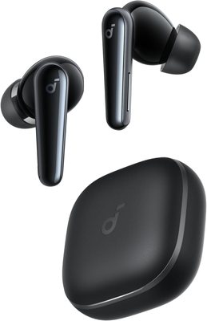
🎧 Inalámbricos Inicial / Calidad-Precio
Liberty 5 (Soundcore)
~US$76
El Liberty 5 lleva audio Dolby y llamadas más claras a la misma franja de precio.
TWS · ANC · 8 h + estuche
Ver precio en Amazon ↗
🎧 Inalámbricos Inicial / Calidad-Precio
ATH-SQ1TW (Audio-Technica)
~US$86
El par económico de A-T: pequeño, ligero, sin ANC pero con tonalidad limpia.
TWS · 6,5 h + estuche
Ver precio en Amazon ↗
🎧 Inalámbricos Inicial / Calidad-Precio
Galaxy Buds3 FE (Samsung)
~US$89
La Fan Edition quita extras y mantiene el ajuste y la autonomía.
TWS · ANC · 8,5 h + estuche
Ver precio en Amazon ↗
🎧 Inalámbricos Inicial / Calidad-Precio
Studio Buds+ (Beats)
~US$90
Ajuste Beats con 36 horas de batería y soporte real de Android.
TWS · ANC · 9 h + estuche
Ver precio en Amazon ↗
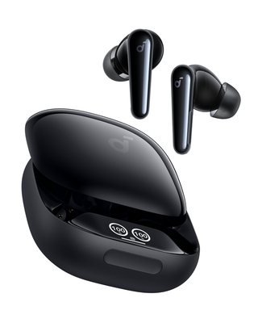
🎧 Inalámbricos Inicial / Calidad-Precio
Liberty 4 Pro (Soundcore)
~US$90
El Pro añade pantalla en el estuche y mejores micrófonos; sigue siendo la opción práctica.
TWS · ANC · 7 h + estuche
Ver precio en Amazon ↗
🎧 Inalámbricos Inicial / Calidad-Precio
Ear (3) (Nothing)
~US$94
El Ear (3) mejora el micrófono y añade un transductor de 12 mm para más graves.
TWS · ANC · 8 h + estuche
Ver precio en Amazon ↗
🎧 Inalámbricos Inicial / Calidad-Precio
Galaxy Buds3 (Samsung)
~US$94
Los Buds3 básicos: más pequeños y baratos, con la misma cancelación y micrófono.
TWS · ANC · 6 h + estuche
Ver precio en Amazon ↗
🎧 Inalámbricos Inicial / Calidad-Precio
EAH-AZ80 (Technics)
~US$95
La afinación audiófila de Technics con multipunto para tres dispositivos y un acabado excelente.
TWS · ANC · LDAC · 7 h
Ver precio en Amazon ↗
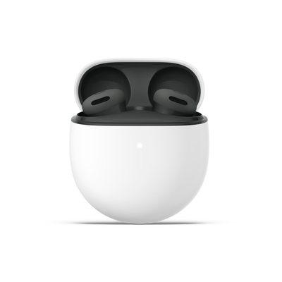
🎧 Inalámbricos Inicial / Calidad-Precio
Pixel Buds 2a (Google)
~US$99
Un par Pixel barato y cómodo que se empareja al instante con Android.
TWS · ANC · 10 h + estuche
Ver precio en Amazon ↗
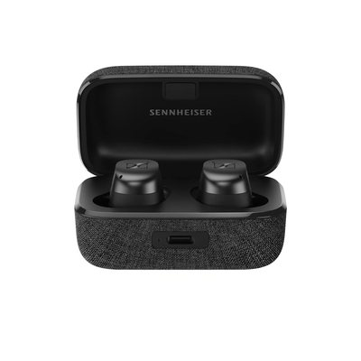
🎧 Inalámbricos Inicial / Calidad-Precio
MOMENTUM True Wireless 3 (Sennheiser)
~US$100
Más antiguo, pero sigue siendo la opción más cálida y musical en este precio.
TWS · ANC · 7 h + estuche
Ver precio en Amazon ↗
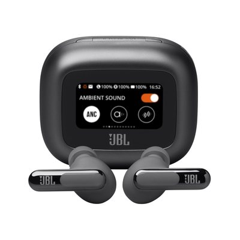
🎧 Inalámbricos Inicial / Calidad-Precio
Live Beam 3 (JBL)
~US$100
Diseño de varilla, pantalla en el estuche y 48 h de reproducción total para viajar.
TWS · ANC · 12 h + estuche
Ver precio en Amazon ↗
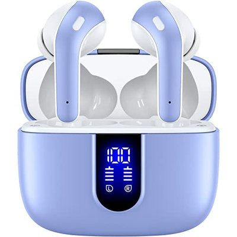
🎧 Inalámbricos Inicial / Calidad-Precio
Galaxy Buds3 Pro (Samsung)
~US$100
El insignia de Samsung con dos transductores: limpio, brillante y afinado para Galaxy.
TWS · ANC · 6 h + estuche
Ver precio en Amazon ↗
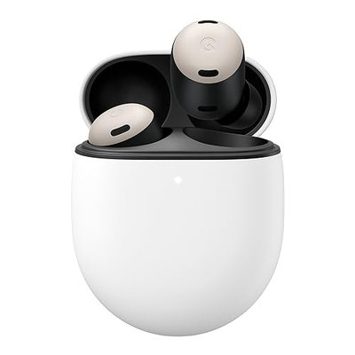
🎧 Inalámbricos Inicial / Calidad-Precio
Pixel Buds Pro (Google)
~US$112
El insignia con ANC de Google; mejor con un Pixel y perfecto con cualquier móvil.
TWS · ANC · 11 h + estuche
Ver precio en Amazon ↗
🎧 Inalámbricos Inicial / Calidad-Precio
Fit Pro (Beats)
~US$119
Beats con ala y chip H1 de Apple: ajuste seguro y gran ANC para iPhone.
TWS · ANC · 6 h + estuche
Ver precio en Amazon ↗
🎧 Inalámbricos Inicial / Calidad-Precio
QuietComfort Earbuds (Bose)
~US$129
El QuietComfort de siempre: el inalámbrico con ANC más cómodo, por menos que el Ultra.
TWS · ANC · 8,5 h + estuche
Ver precio en Amazon ↗
🎧 Inalámbricos Inicial / Calidad-Precio
AirPods 5 (Apple)
~US$129
AirPods abiertos con ANC; el emparejamiento menos problemático en dispositivos Apple.
TWS · ANC · 8 h + estuche
Ver precio en Amazon ↗
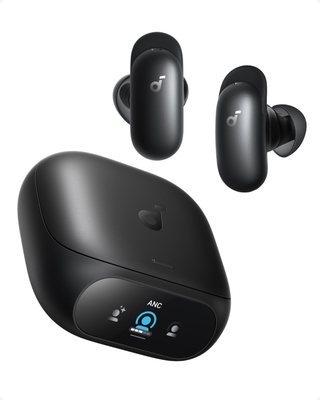
🎧 Inalámbricos Inicial / Calidad-Precio
Liberty 5 Pro (Soundcore)
~US$130
El tope de Soundcore: más cancelación, LDAC y estuche metálico.
TWS · ANC · LDAC · 9 h
Ver precio en Amazon ↗
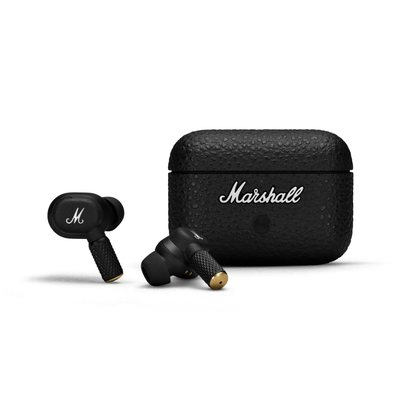
🎧 Inalámbricos Inicial / Calidad-Precio
Motif II ANC (Marshall)
~US$130
El look de amplificador de Marshall con afinación cálida y buen ANC.
TWS · ANC · 6 h + estuche
Ver precio en Amazon ↗
🎧 Inalámbricos Inicial / Calidad-Precio
LinkBuds Clip (Sony)
~US$148
Clip abierto para llamadas y edición; nada dentro del canal auditivo.
Clip abierto · 8 h + estuche
Ver precio en Amazon ↗
🎧 Inalámbricos Inicial / Calidad-Precio
AirPods 5 (wireless charging) (Apple)
~US$149
Los mismos AirPods 5 con estuche de carga inalámbrica para la base Qi del escritorio.
TWS · ANC · estuche inalámbrico
Ver precio en Amazon ↗
🎧 Inalámbricos Inicial / Calidad-Precio
ATH-CKS50TW2 (Audio-Technica)
~US$159
Batería enorme, graves profundos y ajuste firme para grabar fuera del estudio.
TWS · ANC · 20 h + estuche
Ver precio en Amazon ↗
🎧 Inalámbricos Inicial / Calidad-Precio
Buds Pro 3 (OnePlus)
~US$159
Dos transductores y 50 dB de ANC; una de las mejores opciones fuera de Apple.
TWS · ANC · 10 h
Ver precio en Amazon ↗
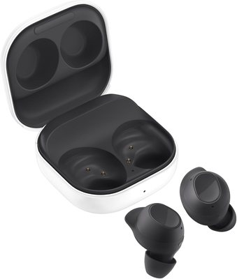
🎧 Inalámbricos Inicial / Calidad-Precio
Galaxy Buds FE (Samsung)
~US$94
El ajuste de ala de la Fan Edition con ANC a precio de liquidación.
TWS · ANC · 6 h + estuche
Ver precio en Amazon ↗
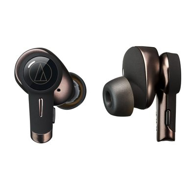
🎧 Inalámbricos Inicial / Calidad-Precio
ATH-TWX9 (Audio-Technica)
~US$175
El insignia de Audio-Technica: detallado, neutro y silencioso en la sala.
TWS · ANC · 6 h + estuche
Ver precio en Amazon ↗
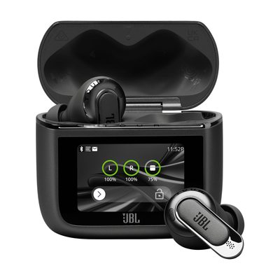
🎧 Inalámbricos Inicial / Calidad-Precio
Tour Pro 3 (JBL)
~US$170
El insignia de JBL con pantalla inteligente en el estuche y la mejor matriz de micrófonos de la gama.
TWS · ANC · 12 h + estuche
Ver precio en Amazon ↗
🎧 Inalámbricos Inicial / Calidad-Precio
Powerbeats Fit (Beats)
~US$170
Los Powerbeats de 2025: ganchos, IPX4, 10 horas y más cancelación.
TWS · gancho · 10 h
Ver precio en Amazon ↗
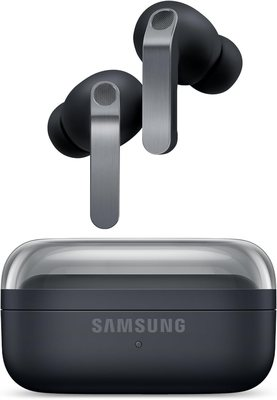
🎧 Inalámbricos Inicial / Calidad-Precio
Galaxy Buds4 Pro (Samsung) (Reacondicionado)
~US$167
Oferta Amazon Renewed: unidad reacondicionada, no nueva.
El insignia de 2026: dos vías, mejor ANC y audio espacial con seguimiento de cabeza.
TWS · ANC · 6 h + estuche
Ver precio en Amazon ↗
🎧 Inalámbricos Inicial / Calidad-Precio
LinkBuds Fit (Sony)
~US$178
Un anillo abierto que no se mueve y deja oír la sala mientras trabajas.
TWS · abierto · ANC · 5,5 h
Ver precio en Amazon ↗
🎧 Inalámbricos Inicial / Calidad-Precio
AirPods Pro 3 (Apple)
~US$179
La mejor cancelación y transparencia para usuarios de iPhone; el par de diario por defecto.
TWS · ANC · 8 h + estuche
Ver precio en Amazon ↗
🎧 Inalámbricos Inicial / Calidad-Precio
Powerbeats Pro 2 (Beats)
~US$180
Ganchos que no se salen al entrenar, con sensor de pulso y batería grande.
TWS · gancho · 10 h + estuche
Ver precio en Amazon ↗
🎧 Inalámbricos Inicial / Calidad-Precio
WF-1000XM5 (Sony)
~US$180
La referencia para el trayecto: buena cancelación, EQ usable y tamaño de bolsillo entre sesión y sesión.
TWS · ANC · 8 h + estuche
Ver precio en Amazon ↗
🎧 Inalámbricos Inicial / Calidad-Precio
Galaxy Buds4 (Samsung)
~US$180
Los Buds4 mantienen la forma y suman más cancelación y llamadas más claras.
TWS · ANC · 6 h + estuche
Ver precio en Amazon ↗
🎧 Inalámbricos Inicial / Calidad-Precio
MOMENTUM True Wireless 4 (Sennheiser)
~US$196
Afinación de audiófilo en formato TWS, con LE Audio y un EQ de verdad.
TWS · ANC · 7,5 h + estuche
Ver precio en Amazon ↗
🎧 Inalámbricos Inicial / Calidad-Precio
Galaxy Buds2 (Samsung)
~US$199
Los Galaxy cómodos y baratos que siguen funcionando con cualquier Android.
TWS · ANC · 5 h + estuche
Ver precio en Amazon ↗
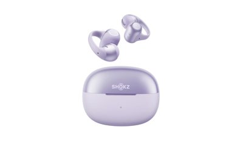
🎧 Inalámbricos Inicial / Calidad-Precio
OpenDots ONE (Shokz)
~US$130
Clip abierto de Shokz con audio Dolby; nada bloquea el oído.
Clip abierto · 12 h + estuche
Ver precio en Amazon ↗
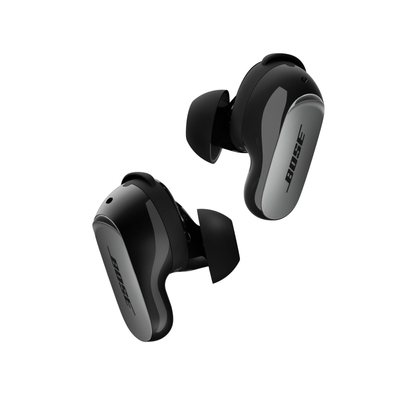
🎧 Inalámbricos Inicial / Calidad-Precio
QuietComfort Ultra Earbuds (2nd Gen) (Bose)
~US$229
La mejor cancelación de Bose en un cuerpo más pequeño, con audio inmersivo para comprobar de camino.
TWS · ANC · 6 h + estuche
Ver precio en Amazon ↗
🎧 Inalámbricos Inicial / Calidad-Precio
WF-1000XM6 (Sony)
~US$248
El nuevo insignia de Sony: llamadas más claras y una escena más amplia que el XM5.
TWS · ANC · LDAC · 8 h + estuche
Ver precio en Amazon ↗
🎧 Inalámbricos Inicial / Calidad-Precio
MOMENTUM True Wireless 5 (Sennheiser)
~US$300
El 5 añade más autonomía y mejores micrófonos a la misma afinación de Sennheiser.
TWS · ANC · 10 h + estuche
Ver precio en Amazon ↗
🎧 Inalámbricos Inicial / Calidad-Precio
QuietComfort Ultra Earbuds (Bose)
~US$279
El Ultra original: cancelación de referencia y un sonido cálido y fácil.
TWS · ANC · 6 h + estuche
Ver precio en Amazon ↗
🎧 Inalámbricos Inicial / Calidad-Precio
PerL Pro (Denon)
~US$299
El insignia de sonido personalizado de Denon: enorme detalle tras la prueba auditiva.
TWS · ANC · aptX Lossless
Ver precio en Amazon ↗
🎧 Inalámbricos Inicial / Calidad-Precio
Pi8 (Bowers & Wilkins)
~US$324
Lo mejor de B&W: tono hi-fi de verdad, aptX Lossless y un estuche de lujo.
TWS · ANC · aptX Lossless
Ver precio en Amazon ↗
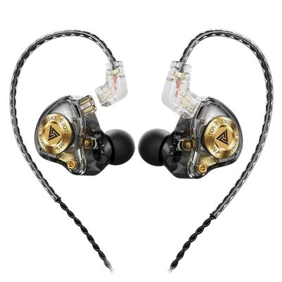
🎧 Con cable Inicial / Calidad-Precio
ENZO (QKZ)
~US$11
Un ENZO a precio de usar y tirar, con afinación divertida y realzada en graves.
Dinámico · 3,5 mm
Ver precio en Amazon ↗
🎧 Con cable Inicial / Calidad-Precio
CRA PRO (CCA)
~US$18
Un in-ear económico con diafragma DLC que suena muy por encima de su precio.
Dinámico · 2 pines 0,75 mm
Ver precio en Amazon ↗
🎧 Con cable Inicial / Calidad-Precio
ZSN PRO X (KZ)
~US$19
El KZ más barato que vale la pena: en V, cómodo y a precio desechable.
1 dinámico + 1 BA · 2 pines 0,75 mm
Ver precio en Amazon ↗
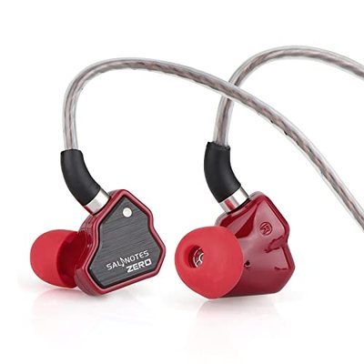
🎧 Con cable Inicial / Calidad-Precio
Salnotes Zero (7Hz)
~US$19
El Salnotes Zero: neutro, barato y recomendable sin pensarlo.
Dinámico · 2 pines 0,78 mm
Ver precio en Amazon ↗
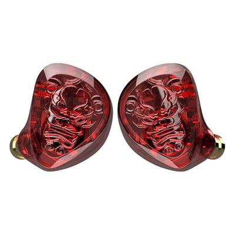
🎧 Con cable Inicial / Calidad-Precio
Wan'er S.G II (Tangzu)
~US$19
El favorito económico de Tangzu: suave, nada fatigante y barato para regalar.
Dinámico · 2 pines 0,78 mm
Ver precio en Amazon ↗
🎧 Con cable Inicial / Calidad-Precio
CHU II (Moondrop)
~US$20
El primer in-ear por defecto: limpio, barato y mejor que casi cualquier auricular de móvil.
Dinámico · 2 pines 0,78 mm
Ver precio en Amazon ↗
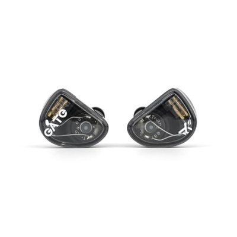
🎧 Con cable Inicial / Calidad-Precio
GATE (Truthear)
~US$20
El dinámico económico de Truthear: limpio y cómodo por el precio.
Dinámico · 2 pines 0,78 mm
Ver precio en Amazon ↗
🎧 Con cable Inicial / Calidad-Precio
CHU III (Moondrop)
~US$21
El CHU III añade cable desmontable y un agudo algo más suave.
Dinámico · 2 pines 0,78 mm
Ver precio en Amazon ↗
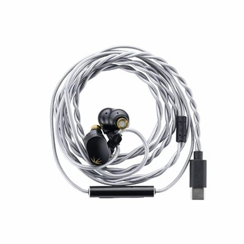
🎧 Con cable Inicial / Calidad-Precio
CHU II DSP (Moondrop)
~US$24
El CHU II con cable DSP USB-C y presets de EQ; se conecta a cualquier móvil.
Dinámico · DSP USB-C
Ver precio en Amazon ↗
🎧 Con cable Inicial / Calidad-Precio
Cadenza (Kiwi Ears)
~US$28
Un dinámico con recubrimiento de berilio, afinación cálida y una carcasa preciosa.
Dinámico · 2 pines 0,78 mm
Ver precio en Amazon ↗
🎧 Con cable Inicial / Calidad-Precio
EW200 (Simgot)
~US$38
El dinámico brillante y detallado de Simgot, que traduce bien al mezclar.
Dinámico · 2 pines 0,78 mm
Ver precio en Amazon ↗
🎧 Con cable Inicial / Calidad-Precio
C12 (CCA)
~US$39
El híbrido 5 BA + 1 dinámico de CCA: brillante y detallado con presupuesto mínimo.
1 dinámico + 5 BA · 2 pines 0,75 mm
Ver precio en Amazon ↗
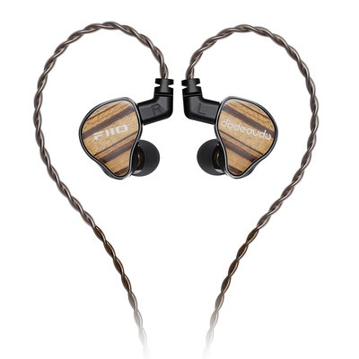
🎧 Con cable Inicial / Calidad-Precio
JH13 (FiiO)
~US$40
El híbrido de entrada de FiiO: afinación limpia y algo cálida que funciona para grabar.
1 dinámico + 2 BA · 2 pines 0,78 mm
Ver precio en Amazon ↗
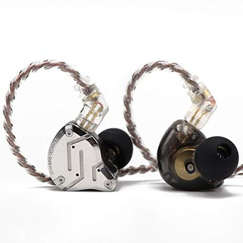
🎧 Con cable Inicial / Calidad-Precio
ZS10 (KZ)
~US$42
El clásico híbrido 4 BA + 1 dinámico de KZ: detalle por casi nada.
1 dinámico + 4 BA · 2 pines 0,75 mm
Ver precio en Amazon ↗
🎧 Con cable Inicial / Calidad-Precio
LAN (Moondrop)
~US$51
Un dinámico equilibrado y algo cálido con un ajuste excelente; monitorización de todo el día.
Dinámico · 2 pines 0,78 mm
Ver precio en Amazon ↗
🎧 Con cable Inicial / Calidad-Precio
SUBSURGE (DUNU)
~US$52
Graves de doble dinámico con medios limpios; bueno para comprobar pop y EDM.
2 dinámicos · 2 pines 0,78 mm
Ver precio en Amazon ↗
🎧 Con cable Inicial / Calidad-Precio
Zero (Truthear)
~US$55
El Zero afinado por Crinacle: neutro, con graves controlados, una referencia fácil para comprobar mezclas.
2 dinámicos · 2 pines 0,78 mm
Ver precio en Amazon ↗
🎧 Con cable Inicial / Calidad-Precio
Zero:RED (Truthear)
~US$55
El Zero:RED añade un estante de graves y un agudo más limpio al Zero de Crinacle.
2 dinámicos · 2 pines 0,78 mm
Ver precio en Amazon ↗
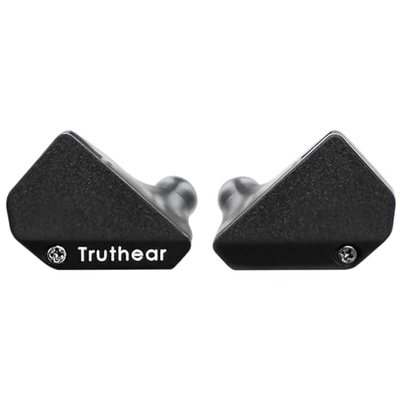
🎧 Con cable Inicial / Calidad-Precio
HEXA (Truthear)
~US$76
Un híbrido 1 dinámico + 3 BA con respuesta neutra, apta para estudio.
1 dinámico + 3 BA · 2 pines 0,78 mm
Ver precio en Amazon ↗
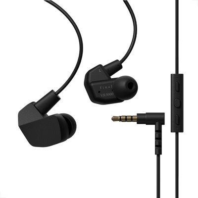
🎧 Con cable Inicial / Calidad-Precio
VR3000 (final)
~US$80
Afinación para juegos y VR con imagen amplia y cable con micrófono.
Dinámico · 3,5 mm · micrófono
Ver precio en Amazon ↗
🎧 Con cable Inicial / Calidad-Precio
Titan S2 (DUNU)
~US$80
El dinámico con carcasa metálica de DUNU: contundente y bien construido por el precio.
Dinámico · 2 pines 0,78 mm
Ver precio en Amazon ↗
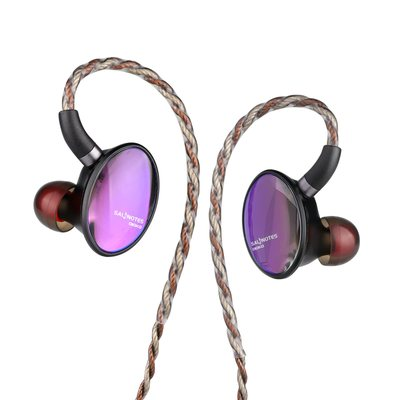
🎧 Con cable Inicial / Calidad-Precio
Dioko (7Hz)
~US$79
Un híbrido planar con agudos brillantes y detallados; la entrada más barata al sonido planar.
Planar + dinámico · 2 pines 0,78 mm · metal
Ver precio en Amazon ↗
🎧 Con cable Inicial / Calidad-Precio
Rays (Moondrop)
~US$85
In-ear USB-C para juegos con tarjeta DSP; micrófono limpio y baja latencia.
Dinámico · DSP USB-C
Ver precio en Amazon ↗
🎧 Con cable Inicial / Calidad-Precio
SE215 PRO (Shure)
~US$91
Aislamiento de monitor de escenario y cable sustituible; el caballo de batalla de gira.
Dinámico · MMCX · estuche rígido
Ver precio en Amazon ↗
🎧 Con cable Inicial / Calidad-Precio
IE 100 PRO (Sennheiser)
~US$109
El monitor de escenario barato de Sennheiser: robusto, cómodo y fácil de mover.
Dinámico · 3,5 mm · desmontable
Ver precio en Amazon ↗
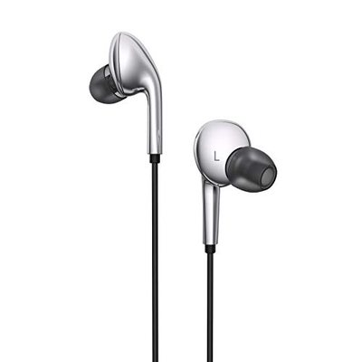
🎧 Con cable Inicial / Calidad-Precio
BL-T3 (BLON)
~US$113
Un dinámico compuesto de 11 mm con firma suave y cálida.
Dinámico · 2 pines 0,78 mm
Ver precio en Amazon ↗
🎧 Con cable Inicial / Calidad-Precio
ATH-E40 (Audio-Technica)
~US$119
El in-ear de escenario de doble transductor de Audio-Technica, con cable over-ear firme.
2 dinámicos · A2DC desmontable
Ver precio en Amazon ↗
🎧 Con cable Inicial / Calidad-Precio
IER-M500 (Sony)
~US$118
El in-ear de monitor compacto de Sony: neutro, aislante y pensado para sesiones largas.
Dinámico · MMCX · 3,5 mm
Ver precio en Amazon ↗
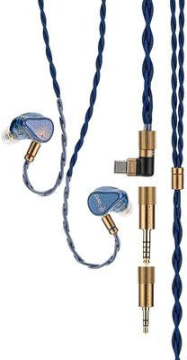
🎧 Con cable Inicial / Calidad-Precio
Starfield 2 (Moondrop)
~US$127
El Starfield en carcasa metálica, con cable desmontable y afinación suave y escuchable.
2 dinámicos · 2 pines 0,78 mm
Ver precio en Amazon ↗
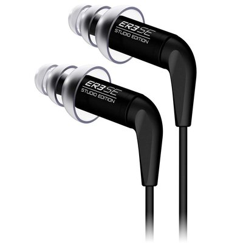
🎧 Con cable Inicial / Calidad-Precio
ER3SE (Etymotic)
~US$150
Etymotic plano de estudio con aislamiento profundo; el par honesto para comprobar.
1 BA · almohadillas de 3 aletas · 3,5 mm
Ver precio en Amazon ↗
🎧 Con cable Inicial / Calidad-Precio
ER2SE (Etymotic)
~US$150
Etymotic dinámico con afinación plana de estudio y aislamiento profundo.
Dinámico · 3 aletas · 3,5 mm
Ver precio en Amazon ↗
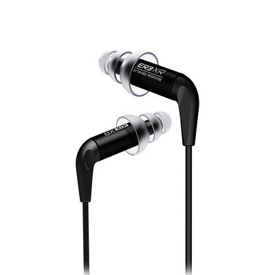
🎧 Con cable Inicial / Calidad-Precio
ER3XR (Etymotic)
~US$150
El ER3 con refuerzo de graves; más fácil de convivir que el SE.
1 BA · 3 aletas
Ver precio en Amazon ↗
🎧 Con cable Inicial / Calidad-Precio
S12 Pro (LETSHUOER)
~US$150
Un planar de 14,8 mm con firma brillante y rápida y boquillas intercambiables.
Planar · 2 pines 0,78 mm
Ver precio en Amazon ↗
🎧 Con cable Inicial / Calidad-Precio
E4000 (final)
~US$165
El dinámico cálido y musical de final, el par que se queda para escuchar por gusto.
Dinámico · MMCX · 3,5 mm
Ver precio en Amazon ↗
🎧 Con cable Inicial / Calidad-Precio
Timeless (7Hz)
~US$176
Un planar de 14,2 mm con una velocidad y un detalle que avergüenzan su precio.
Planar · MMCX
Ver precio en Amazon ↗
🎧 Con cable Inicial / Calidad-Precio
Kadenz (Moondrop)
~US$187
Dinámico insignia con conectores modulares y un tono refinado y natural.
Dinámico · 2 pines 0,78 mm · opción 4,4 mm
Ver precio en Amazon ↗
🎧 Con cable Inicial / Calidad-Precio
Orchestra Lite (Kiwi Ears)
~US$199
Ocho armaduras equilibradas afinadas para monitorizar en directo: detalle sin dureza.
8 BA · 2 pines 0,78 mm · metal
Ver precio en Amazon ↗
🎧 Con cable Inicial / Calidad-Precio
ATH-E50 (Audio-Technica)
~US$210
El E40 con mejor cable y afinación más plana para monitorizar.
2 dinámicos · A2DC desmontable
Ver precio en Amazon ↗
🎧 Con cable Inicial / Calidad-Precio
SE425 PRO (Shure)
~US$249
Shure de doble BA: medios y voces claros, con menos graves que el SE215.
2 BA · MMCX
Ver precio en Amazon ↗
🎧 Con cable Inicial / Calidad-Precio
FH5s (FiiO)
~US$255
El híbrido de FiiO con filtros intercambiables y una construcción metálica sólida.
1 dinámico + 2 BA · 2 pines 0,78 mm
Ver precio en Amazon ↗
🎧 Con cable Inicial / Calidad-Precio
Astral (Kiwi Ears)
~US$239
El 1 dinámico + 6 BA de Kiwi Ears: un híbrido amplio y detallado para escucha de referencia.
1 dinámico + 6 BA · 2 pines 0,78 mm
Ver precio en Amazon ↗
🎧 Con cable Inicial / Calidad-Precio
EVO (Etymotic)
~US$299
El experimento multi-transductor de Etymotic: más escena con el mismo aislamiento.
3 transductores · MMCX
Ver precio en Amazon ↗
🎧 Con cable Inicial / Calidad-Precio
ER4XR (Etymotic)
~US$299
El Etymotic de referencia: plano, aislante y todavía la elección de las clínicas.
1 BA · 3 aletas
Ver precio en Amazon ↗
🎧 Con cable Inicial / Calidad-Precio
Blessing 3 (Moondrop)
~US$306
El híbrido de referencia de Moondrop: medios neutros, graves controlados y detalle real.
2 dinámicos + 4 BA · 2 pines 0,78 mm
Ver precio en Amazon ↗
🎧 Con cable Inicial / Calidad-Precio
SE535 (Shure)
~US$419
Referencia de triple BA para cantantes; el monitor de escenario clásico.
3 BA · MMCX · 3 cables
Ver precio en Amazon ↗
🎧 Con cable Inicial / Calidad-Precio
ATH-E70 (Audio-Technica)
~US$429
Una referencia de tres transductores para escenario y estudio.
3 BA · A2DC desmontable
Ver precio en Amazon ↗
🎧 Con cable Inicial / Calidad-Precio
4Planar (Moondrop)
~US$467
Meteor: cuatro transductores planares más híbridos para una escena enorme y rápida.
1 dinámico + 2 BA + 4 planar · 2 pines
Ver precio en Amazon ↗
🎧 Con cable Inicial / Calidad-Precio
Variations (Moondrop)
~US$509
Un tribrid con tweeters EST: aireado, detallado y con mucha escena.
1 dinámico + 2 BA + 2 EST · 2 pines
Ver precio en Amazon ↗
🎧 Con cable Inicial / Calidad-Precio
SE846 Gen 2 (Shure)
~US$999
Cuatro BA con filtros intercambiables: el in-ear de referencia que los técnicos llevan en la mochila.
4 BA · 3 filtros · MMCX
Ver precio en Amazon ↗
🎧 Con cable Estudio Pro
IE 900 (Sennheiser)
~US$1,200
El insignia de Sennheiser: detalle TrueResponse con graves de verdad controlados.
Dinámico · MMCX · 3 cables
Ver precio en Amazon ↗
🔊 Monitores Inicial / Calidad-Precio
Eris 3.5 (pair) (PreSonus)
~US$100
Una pareja de monitores pequeños de escritorio: honestos, equilibrados y fáciles de colocar.
Woofer 3,5" · 25 W cada uno · 1 pareja
Ver precio en Amazon ↗
🔊 Monitores Inicial / Calidad-Precio
Eris E4.5 (pair) (PreSonus)
~US$118
La pareja E4.5: más graves que el 3.5 con la misma afinación neutra.
Woofer 4,5" · 50 W · 1 pareja
Ver precio en Amazon ↗
🔊 Monitores Inicial / Calidad-Precio
MR4 (pair) (Edifier)
~US$180
Una pareja de escritorio económica con unos medios sorprendentemente planos.
Woofer 4" · 80 W RMS · 1 pareja
Ver precio en Amazon ↗
🔊 Monitores Inicial / Calidad-Precio
Eris E5 (pair) (PreSonus)
~US$220
La pareja E5: un nearfield de 5,25" con margen real para una sala pequeña.
Woofer 5,25" · 80 W · 1 pareja
Ver precio en Amazon ↗
🔊 Monitores Inicial / Calidad-Precio
MR5 (pair) (Edifier)
~US$250
La pareja 2.0 de 110 W de Edifier: más hi-fi que estudio, pero divertida y potente.
Woofer 5" · 110 W RMS · 1 pareja
Ver precio en Amazon ↗
🔊 Monitores Inicial / Calidad-Precio
iLoud Micro Monitor (IK Multimedia)
~US$250
Una pareja diminuta que cabe detrás de un portátil y aun así imagina bien.
Woofer 3" · 50 W · 1 pareja
Ver precio en Amazon ↗
🔊 Monitores Inicial / Calidad-Precio
ROKIT 7 G4 (pair) (KRK)
~US$334
El Rokit de 7": más graves para una sala que los aguante.
Woofer 7" · 1 pareja
Ver precio en Amazon ↗
🔊 Monitores Inicial / Calidad-Precio
ROKIT 5 G5 (pair) (KRK)
~US$398
El Rokit de quinta generación: puerto frontal, amplificador limpio y el cono amarillo de siempre.
Woofer 5" · 55 W · 1 pareja
Ver precio en Amazon ↗
🔊 Monitores Inicial / Calidad-Precio
T5V (pair) (ADAM Audio)
~US$400
El monitor de entrada de ADAM con tweeter de cinta: agudos detallados y graves firmes de 5".
Woofer 5" · tweeter U-ART · 1 pareja
Ver precio en Amazon ↗
🔊 Monitores Inicial / Calidad-Precio
Alpha 50 Evo (pair) (Focal)
~US$658
La pareja nearfield de 5" de Focal: contundente, amplia y buena a bajo volumen.
Woofer 5" · 1 pareja
Ver precio en Amazon ↗
🎙️ Micrófonos Inicial / Calidad-Precio
SM58-LC (Shure)
~US$89
El micro de voz que sobrevive a las giras. Dinámico cardioide, duro como un martillo.
Dinámico · cardioide · XLR
Ver precio en Amazon ↗
🎙️ Micrófonos Inicial / Calidad-Precio
SM57 (Shure)
~US$89
El micro de instrumento: caja, amplificador de guitarra o voz en una sala ruidosa.
Dinámico · cardioide · XLR
Ver precio en Amazon ↗
🎙️ Micrófonos Inicial / Calidad-Precio
PodMic (RØDE)
~US$99
Un dinámico pensado para la voz con antipop interno y una horquilla sólida.
Dinámico · cardioide · XLR
Ver precio en Amazon ↗
🎙️ Micrófonos Inicial / Calidad-Precio
LCT 240 Pro (Lewitt)
~US$99
El condensador económico de Lewitt, con patrón cardioide cerrado y bajo ruido propio.
Condensador · cardioide · XLR
Ver precio en Amazon ↗
🎙️ Micrófonos Inicial / Calidad-Precio
NT-USB Mini (RØDE)
~US$105
Un condensador USB del tamaño de una taza; sonido de podcast al instante.
USB-C · cardioide · salida de auriculares
Ver precio en Amazon ↗
🎙️ Micrófonos Inicial / Calidad-Precio
AT2020 (Audio-Technica)
~US$118
El primer condensador que vale la pena comprar: suave, neutro y barato.
Condensador · cardioide · 20 Hz–20 kHz
Ver precio en Amazon ↗
🎙️ Micrófonos Inicial / Calidad-Precio
NT1 Signature Series (RØDE)
~US$159
El condensador de diafragma grande, silencioso y neutro de RØDE, con araña en la caja.
Condensador · cardioide · araña
Ver precio en Amazon ↗
🎙️ Micrófonos Inicial / Calidad-Precio
MV7X (Shure)
~US$169
Tono tipo SM7B en un cuerpo más simple y con salida XLR directa.
Dinámico · cardioide · XLR
Ver precio en Amazon ↗
🎙️ Micrófonos Inicial / Calidad-Precio
MV7+ (Shure)
~US$255
El MV7 con USB-C, niveles automáticos y salida de auriculares; un micro para todo.
Dinámico · USB-C + XLR
Ver precio en Amazon ↗
🎙️ Micrófonos Inicial / Calidad-Precio
SM7B (Shure)
~US$369
Dinámico de radio que saca una voz gruesa de una sala sin tratar.
Dinámico · cardioide · necesita 60 dB de ganancia
Ver precio en Amazon ↗
🎙️ Micrófonos Inicial / Calidad-Precio
RE20 (Electro-Voice)
~US$449
El clásico de radio con Variable-D: sin efecto proximidad, bueno con todo.
Dinámico · cardioide · XLR
Ver precio en Amazon ↗
🎙️ Micrófonos Inicial / Calidad-Precio
TLM 102 (Neumann)
~US$674
Un TLM más pequeño con un leve realce de presencia; genial en voz y guitarra.
Condensador · cardioide · XLR
Ver precio en Amazon ↗
🎙️ Micrófonos Estudio Pro
TLM 103 (Neumann)
~US$1,217
El condensador de voz por defecto en estudios de proyecto: detallado sin sibilancias.
Condensador · cardioide · XLR
Ver precio en Amazon ↗
🎛️ Amplificadores Inicial / Calidad-Precio
L30 II (Topping)
~US$149
Un amplificador NFCA limpio con tres pasos de ganancia; suficiente para un par de referencia de 300 Ω.
Salidas 4,4 mm / 6,3 mm · entrada RCA · 3 ganancias
Ver precio en Amazon ↗
🎛️ Amplificadores Inicial / Calidad-Precio
K7 (Fosi Audio)
~US$170
Un DAC/amplificador de escritorio económico con entrada de micrófono para llamadas y juegos.
DAC + amplificador · entrada de micro · USB
Ver precio en Amazon ↗
🎛️ Amplificadores Inicial / Calidad-Precio
K7 (FiiO)
~US$220
El DAC/amplificador de escritorio de FiiO: salida balanceada y potencia para casi todo.
DAC + amplificador · 4,4 mm / 6,3 mm
Ver precio en Amazon ↗
🎛️ Amplificadores Inicial / Calidad-Precio
ZEN CAN 3 (iFi)
~US$229
El amplificador analógico de iFi con XBass y salida balanceada de 4,4 mm.
4,4 mm balanceado · 6,3 mm · XBass
Ver precio en Amazon ↗
🎛️ Amplificadores Inicial / Calidad-Precio
A70 Pro (Topping)
~US$424
17 W por canal de potencia limpia con control de volumen por relés.
Salida balanceada · previo · volumen por relés
Ver precio en Amazon ↗
🎛️ Amplificadores Inicial / Calidad-Precio
A90 Discrete (Topping)
~US$539
El insignia balanceado y discreto de Topping: un margen enorme para planares.
XLR / 4,4 mm / 6,3 mm · salida de previo
Ver precio en Amazon ↗
🎛️ Amplificadores Estudio Pro
A900 (Topping)
~US$1,104
El amplificador tope de gama de Topping: 22 W de salida y modo previo puro.
22.000 mW · 6 salidas · modo previo
Ver precio en Amazon ↗
🔌 DAC Inicial / Calidad-Precio
SU-1 (SMSL)
~US$72
El DAC más barato que sigue midiendo bien: AK4493S, USB, óptica y coaxial.
AK4493S · USB / óptica / coaxial · salida RCA
Ver precio en Amazon ↗
🔌 DAC Inicial / Calidad-Precio
E30 II Lite (Topping)
~US$84
El pequeño DAC de escritorio de Topping con mando y una salida AK4493S limpia.
AK4493S · USB / coaxial / óptica
Ver precio en Amazon ↗
🔌 DAC Inicial / Calidad-Precio
K11 (FiiO)
~US$143
El DAC/amplificador de FiiO con salida balanceada y potencia para casi cualquier auricular.
DAC + amplificador · 4,4 mm / 6,3 mm
Ver precio en Amazon ↗
🔌 DAC Inicial / Calidad-Precio
ZEN DAC V2 (iFi)
~US$169
El V2: sigue siendo un gran primer DAC de escritorio con salida balanceada.
Burr-Brown · 4,4 mm balanceado · RCA
Ver precio en Amazon ↗
🔌 DAC Inicial / Calidad-Precio
K11 R2R (FiiO)
~US$176
La versión R2R del K11: un tono más cálido y analógico.
DAC R2R + amplificador · 4,4 mm / 6,3 mm
Ver precio en Amazon ↗
🔌 DAC Inicial / Calidad-Precio
Modi 5 (Schiit)
~US$209
El pequeño DAC de escritorio de Schiit: simple, silencioso y fabricado en EE. UU.
USB / óptica / coaxial · salida RCA
Ver precio en Amazon ↗
🔌 DAC Inicial / Calidad-Precio
ZEN DAC 3 (iFi)
~US$190
El tercer ZEN DAC de iFi: etapa Burr-Brown limpia con XBass y salida de 4,4 mm.
Burr-Brown · 4,4 mm balanceado · XBass
Ver precio en Amazon ↗
🔌 DAC Inicial / Calidad-Precio
DL300 (SMSL)
~US$382
El DAC/amplificador AK4499EX de SMSL: sonido grande y detallado con muchas salidas.
AK4499EX · 6,35 / 4,4 mm · RCA
Ver precio en Amazon ↗
🔌 DAC Inicial / Calidad-Precio
GO bar Kensei (iFi)
~US$449
Un DAC/amplificador portátil con procesado K2HD y mucha salida para in-ear.
Portátil · 4,4 / 3,5 mm · K2HD
Ver precio en Amazon ↗
🔌 DAC Inicial / Calidad-Precio
Mojo 2 (Chord)
~US$650
El DAC de bolsillo de Chord: sonido cálido y amplio con un EQ real.
Portátil · 2 × 3,5 mm · USB / óptica
Ver precio en Amazon ↗
🔌 DAC Estudio Pro
D900 (Topping)
~US$1,529
El DAC 1-bit insignia de Topping: 140 dB de rango dinámico en el banco.
PSRM 1-bit · XLR / RCA · Bluetooth
Ver precio en Amazon ↗
🎹 Teclados MIDI Inicial / Calidad-Precio
MPK mini IV (Akai Professional)
~US$89
25 teclas y ocho pads MPC que caben en una mochila: el teclado de bocetos.
25 teclas mini · 8 pads · USB-C
Ver precio en Amazon ↗
🎹 Teclados MIDI Inicial / Calidad-Precio
microKEY 37 (Korg)
~US$105
El teclado USB diminuto de 37 teclas de Korg: alimentado por bus y de bolsillo.
37 teclas · USB
Ver precio en Amazon ↗
🎹 Teclados MIDI Inicial / Calidad-Precio
MPK Mini Plus (Akai Professional)
~US$118
El Mini con 37 teclas, secuenciador y MIDI real.
37 teclas · 8 pads · MIDI de 5 pines
Ver precio en Amazon ↗
🎹 Teclados MIDI Inicial / Calidad-Precio
MiniLab 3 (Arturia)
~US$119
El controlador de 25 teclas de Arturia con un teclado excelente y software incluido.
25 teclas · 8 pads · USB-C
Ver precio en Amazon ↗
🎹 Teclados MIDI Inicial / Calidad-Precio
Oxygen Pro Mini (M-Audio)
~US$119
32 teclas y pads en un formato compacto; buen segundo teclado.
32 teclas · 8 pads · USB
Ver precio en Amazon ↗
🎹 Teclados MIDI Inicial / Calidad-Precio
Oxygen 49 MKV (M-Audio)
~US$199
49 teclas con modos inteligentes de acorde y escala para componer rápido.
49 teclas · 8 pads · USB-C
Ver precio en Amazon ↗
🎹 Teclados MIDI Inicial / Calidad-Precio
KeyLab Essential 49 mk3 (Arturia)
~US$229
El KeyLab Essential de 49 teclas: mismos controles en menos espacio.
49 teclas · 9 faders · USB / MIDI
Ver precio en Amazon ↗
🎹 Teclados MIDI Inicial / Calidad-Precio
KeyLab Essential 61 mk3 (Arturia)
~US$269
61 teclas, faders y encoders mapeados al DAW, con Analog Lab V incluido.
61 teclas · 9 faders · USB / MIDI
Ver precio en Amazon ↗
🎹 Teclados MIDI Inicial / Calidad-Precio
Launchkey 49 MK4 (Novation)
~US$280
El Launchkey de 49 teclas: el mismo control de Ableton en un cuerpo menor.
49 teclas · 16 pads · USB-C
Ver precio en Amazon ↗
🎹 Teclados MIDI Inicial / Calidad-Precio
Launchkey 61 MK4 (Novation)
~US$330
61 teclas semipesadas con pads y aftertouch e integración profunda con Ableton.
61 teclas · 16 pads · USB-C
Ver precio en Amazon ↗
🎹 Teclados MIDI Inicial / Calidad-Precio
A-49 (Roland)
~US$370
El controlador ligero de 49 teclas de Roland, con acción sólida y controles simples.
49 teclas · USB / MIDI
Ver precio en Amazon ↗
🎹 Pianos digitales Inicial / Calidad-Precio
FP-10 (Roland)
~US$420
El 88 teclas más barato de Roland: tono SuperNATURAL y acción PHA-4.
88 teclas · PHA-4 · Bluetooth MIDI
Ver precio en Amazon ↗
🎹 Pianos digitales Inicial / Calidad-Precio
P-145 (Yamaha)
~US$500
88 teclas contrapesadas, un tono CFX usable y Bluetooth; un piano tamaño escritorio.
88 teclas · acción GHS · 2 × 7 W
Ver precio en Amazon ↗
🎹 Pianos digitales Inicial / Calidad-Precio
Privia PX-S1100 (Casio)
~US$600
El piano de 88 teclas más delgado: funciona con pilas y tiene un buen gran piano alemán.
88 teclas · Smart Scaled Hammer · pilas
Ver precio en Amazon ↗
🎹 Pianos digitales Inicial / Calidad-Precio
DDP-200 (Donner)
~US$570
Un vertical de 88 teclas económico con acción de martillo graduada y soporte.
88 teclas · martillo graduado · soporte
Ver precio en Amazon ↗
🎹 Pianos digitales Inicial / Calidad-Precio
P-225 (Yamaha)
~US$630
El P-145 con mejor acción y más voces, igual de portátil.
88 teclas · acción GHC · Bluetooth
Ver precio en Amazon ↗
🎹 Pianos digitales Inicial / Calidad-Precio
FP-30X (Roland)
~US$670
El FP-30X añade Bluetooth de audio y un amplificador más potente al FP-10.
88 teclas · PHA-4 · 2 × 11 W
Ver precio en Amazon ↗
🎹 Pianos digitales Inicial / Calidad-Precio
Privia PX-S3100 (Casio)
~US$730
El piano de escenario delgado de Casio con 700 tonos y rueda de pitch.
88 teclas · Smart Scaled Hammer · 700 tonos
Ver precio en Amazon ↗
🎹 Pianos digitales Inicial / Calidad-Precio
ES120 (Kawai)
~US$799
El ES120 de Kawai: acción de martillo sensible y el tono del gran piano SK-EX.
88 teclas · acción RHC · Bluetooth
Ver precio en Amazon ↗
🎚️ Interfaces Inicial / Calidad-Precio
UMC22 (Behringer)
~US$53
La caja de inicio de una entrada de Behringer; suficiente para un micro y una guitarra.
1 entrada / 2 salidas · USB · 48 kHz
Ver precio en Amazon ↗
🎚️ Interfaces Inicial / Calidad-Precio
UMC202HD (Behringer)
~US$87
La forma más barata de tener dos previos Midas: 24/192 en un cuerpo metálico.
2 entradas / 2 salidas · USB · 24/192
Ver precio en Amazon ↗
🎚️ Interfaces Inicial / Calidad-Precio
AudioBox 96 (PreSonus)
~US$95
El inicio de estudio de PreSonus, con Studio One Artist incluido.
2 entradas / 2 salidas · USB · Studio One
Ver precio en Amazon ↗
🎚️ Interfaces Inicial / Calidad-Precio
Scarlett Solo 4th Gen (Focusrite)
~US$130
Un previo, una entrada de instrumento y un driver que simplemente funciona: la primera interfaz.
1 entrada / 2 salidas · USB-C · 24/192
Ver precio en Amazon ↗
🎚️ Interfaces Inicial / Calidad-Precio
Scarlett 2i2 4th Gen (Focusrite)
~US$190
La primera interfaz por defecto: dos previos limpios, ganancia automática y margen de sobra.
2 entradas / 2 salidas · USB-C · 24/192
Ver precio en Amazon ↗
🎚️ Interfaces Inicial / Calidad-Precio
iD4 MKII (Audient)
~US$195
El previo de consola de Audient y un DI JFET en una caja de dos entradas.
2 entradas / 2 salidas · USB-C · previo de consola
Ver precio en Amazon ↗
🎚️ Interfaces Inicial / Calidad-Precio
M2 (MOTU)
~US$200
La M2 de MOTU: conversores limpios, pantalla a color y drivers sólidos.
2 entradas / 2 salidas · USB-C · loopback
Ver precio en Amazon ↗
🎚️ Interfaces Inicial / Calidad-Precio
SSL 2 MKII (Solid State Logic)
~US$200
La interfaz de 2 entradas de SSL con el sonido del previo de la serie 4000 y un gran mando de monitores.
2 entradas / 2 salidas · USB-C · 24/192
Ver precio en Amazon ↗
🎚️ Interfaces Inicial / Calidad-Precio
iD14 MKII (Audient)
~US$269
La iD14 añade ADAT y una segunda salida de auriculares: un pequeño centro de estudio.
10 entradas / 4 salidas · ADAT · USB-C
Ver precio en Amazon ↗
🎚️ Interfaces Inicial / Calidad-Precio
Scarlett 4i4 4th Gen (Focusrite)
~US$310
Cuatro entradas, MIDI y dos salidas de auriculares para un pequeño set de sintes.
4 entradas / 4 salidas · MIDI · USB-C
Ver precio en Amazon ↗
🎚️ Interfaces Inicial / Calidad-Precio
Babyface Pro FS (RME)
~US$999
La referencia en estabilidad y latencia; TotalMix sigue igual al cambiar de ordenador.
12 entradas / 12 salidas · USB · TotalMix FX
Ver precio en Amazon ↗
💻 Computadoras Inicial / Calidad-Precio
Mac mini M6 (16 GB / 256 GB) (Apple)
~US$779
El ordenador de estudio más silencioso por dinero: M6, 16 GB de memoria unificada y sin ruido de ventilador.
M6 · 16 GB · SSD 256 GB
Ver precio en Amazon ↗
💻 Computadoras Inicial / Calidad-Precio
Mac mini M6 (24 GB / 512 GB) (Apple)
~US$949
El Mac mini con 24 GB y 512 GB: espacio para bibliotecas de samples.
M6 · 24 GB · SSD 512 GB
Ver precio en Amazon ↗
💻 Computadoras Estudio Pro
MacBook Air 13" M5 (Apple)
~US$1,049
Silencioso, ligero y suficientemente rápido para grabar y mezclar fuera del estudio.
M5 · 16 GB · 13,6" Liquid Retina
Ver precio en Amazon ↗
💻 Computadoras Estudio Pro
iMac 24" M4 (Apple)
~US$1,199
Un todo en uno con M4 y pantalla 4,5K; un solo cable en el escritorio.
M4 · 24" 4,5K · 16 GB
Ver precio en Amazon ↗
💻 Computadoras Estudio Pro
MacBook Air 15" M5 (Apple)
~US$1,249
El Air de 15": el mismo silencio con una pantalla para mezclar.
M5 · 16 GB · 15,3" Liquid Retina
Ver precio en Amazon ↗
💻 Computadoras Estudio Pro
MacBook Pro 14" M5 Pro (Apple)
~US$2,249
El M5 Pro de 14": el portátil que compra una sala de mezcla de verdad.
M5 Pro · 14,2" XDR · Thunderbolt 5
Ver precio en Amazon ↗
💻 Computadoras Estudio Pro
Mac Studio M5 Max (Apple)
~US$2,299
Un sobremesa que sigue en silencio con una plantilla orquestal completa.
M5 Max · Thunderbolt 5 · SDXC
Ver precio en Amazon ↗
💻 Computadoras Estudio Pro
MacBook Pro 14" M5 Pro (18-core) (Apple)
~US$2,749
El M5 Pro de 18 núcleos, con más GPU y memoria para sesiones grandes.
M5 Pro 18 núcleos · 14,2" XDR
Ver precio en Amazon ↗
🖥️ Escritorio Inicial / Calidad-Precio
Monitor Isolation Pads (JBER)
~US$12
Almohadillas de espuma que evitan que el escritorio coloree los graves.
2 almohadillas · inclinadas · monitores de 3–5"
Ver precio en Amazon ↗
🖥️ Escritorio Inicial / Calidad-Precio
Under-Desk Cable Tray
~US$13
Una bandeja de malla con pinza que saca el lío de cables del suelo.
Sin taladrar · 2 pasacables
Ver precio en Amazon ↗
🖥️ Escritorio Inicial / Calidad-Precio
Studio Desk Mat (L) (Logitech)
~US$15
Una alfombrilla grande que deja el teclado silencioso y la mesa limpia.
71 × 30 cm · borde cosido
Ver precio en Amazon ↗
🖥️ Escritorio Inicial / Calidad-Precio
SS5 Isolation Pads (Kolvec)
~US$16
Almohadillas de aislamiento inclinadas que apuntan los altavoces a tus oídos.
1 pareja · espuma de alta densidad
Ver precio en Amazon ↗
🖥️ Escritorio Inicial / Calidad-Precio
Desktop Speaker Stands (pair) (NiuNyuNeu)
~US$20
Soportes con pinza que levantan los altavoces de escritorio.
1 pareja · 23–36 cm · pinza
Ver precio en Amazon ↗
🖥️ Escritorio Inicial / Calidad-Precio
Acoustic Panels (12-pack) (Ekkogo)
~US$23
Doce paneles de alta densidad para los puntos de primera reflexión.
12 paneles · 30 × 26 cm
Ver precio en Amazon ↗
🖥️ Escritorio Inicial / Calidad-Precio
Adjustable Footrest (ErGear)
~US$29
Un reposapiés inclinable que descarga las jornadas largas de mezcla.
3 alturas · superficie de masaje
Ver precio en Amazon ↗
🖥️ Escritorio Inicial / Calidad-Precio
Monitor Light Bar (Quntis)
~US$34
Una barra de luz para el monitor que ilumina el escritorio sin reflejos en la pantalla.
Alimentación USB · 3 temperaturas de color
Ver precio en Amazon ↗
🖥️ Escritorio Inicial / Calidad-Precio
Studio Monitor Stands (pair)
~US$73
Soportes de escritorio que suben los monitores a la altura del oído y liberan la mesa.
1 pareja · 74–95 cm · pinza
Ver precio en Amazon ↗
🖥️ Escritorio Inicial / Calidad-Precio
EN1 Standing Desk Frame (FLEXISPOT)
~US$95
Un bastidor motorizado que convierte cualquier tablero en escritorio regulable.
Doble motor · altura 68–120 cm
Ver precio en Amazon ↗
🖥️ Escritorio Inicial / Calidad-Precio
Deluxe Broadcast Boom Arm (Gator)
~US$100
Un brazo de radio resistente que sostiene un SM7B sin hundirse.
Pinza de escritorio · 2,3 kg de carga
Ver precio en Amazon ↗
🖥️ Escritorio Inicial / Calidad-Precio
ISO-155 Isolation Stands (IsoAcoustics)
~US$136
Soportes de aislamiento que desacoplan los monitores del escritorio y aprietan los graves.
1 pareja · altura ajustable · hasta monitores de 8"
Ver precio en Amazon ↗
🖥️ Escritorio Inicial / Calidad-Precio
PSA1+ Boom Arm (RØDE)
~US$136
El brazo de resorte de RØDE: movimiento silencioso y canal de cables de verdad.
Pinza de escritorio · 1,1 kg de carga
Ver precio en Amazon ↗
🖥️ Escritorio Inicial / Calidad-Precio
LX Monitor Arm (Ergotron)
~US$200
El brazo LX de Ergotron: el monitor flota y el escritorio queda libre.
Brazo simple · 3–9 kg · VESA
Ver precio en Amazon ↗
🖥️ Escritorio Inicial / Calidad-Precio
Aeron (Size B) (Herman Miller)
~US$639
La silla que todo estudio acaba comprando: malla, ajustable y 12 años de garantía.
Talla B · PostureFit · malla
Ver precio en Amazon ↗